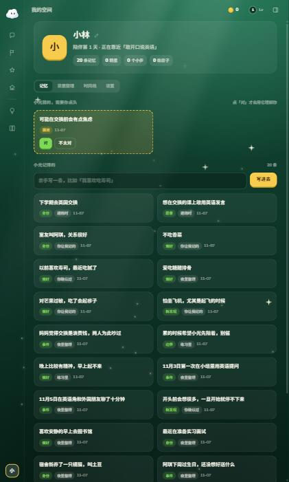
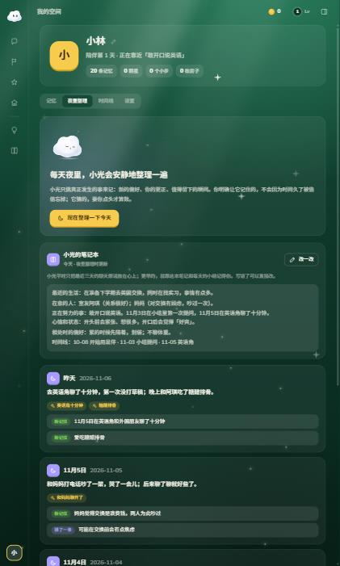

<!doctype html>
<html lang="zh-CN" data-theme="forest">
<head>
<meta charset="utf-8">
<title>我的空间 · 记忆和夜里整理的新样子</title>
<meta name="viewport" content="width=device-width, initial-scale=1">
<!-- 直接用 App 自己的样式，保证和现在的「我的空间」是同一套排版 -->
<link rel="stylesheet" href="../../demo/public/css/fonts.css">
<link rel="stylesheet" href="../../demo/public/css/base.css">
<link rel="stylesheet" href="../../demo/public/css/components.css">
<link rel="stylesheet" href="../../demo/public/css/pages.css">
<style>
  body { overflow: auto; height: auto; }
  .doc { max-width: 1240px; margin: 0 auto; padding: 36px 28px 80px; }
  .doc > h1 { font-size: 26px; margin: 0 0 8px; }
  .doc > p.lead { color: var(--text-2); max-width: 980px; margin: 0 0 24px; line-height: 1.8; }
  .doc h2.part { font-size: 19px; margin: 44px 0 6px; }
  .doc p.part-sub { color: var(--text-2); margin: 0 0 16px; font-size: 14px; }
  .vs { display: grid; grid-template-columns: 380px minmax(0, 1fr); gap: 28px; align-items: start; }
  .vs .lbl { font-size: 12px; font-weight: 900; color: var(--text-3); letter-spacing: .04em; margin: 0 0 8px; }
  .vs img { width: 100%; border-radius: 18px; border: 1px solid var(--line-2); display: block; }
  .vs .bad { font-size: 12.5px; color: #ffb3a8; margin-top: 8px; line-height: 1.7; }
  .frame { border: 1px solid var(--line-2); border-radius: 24px; padding: 22px 22px 26px; background: var(--bg); }
  .tbl { width: 100%; border-collapse: collapse; font-size: 13.5px; }
  .tbl th, .tbl td { text-align: left; padding: 9px 10px; border-top: 1px solid var(--line); vertical-align: top; }
  .tbl th { color: var(--text-3); font-weight: 800; border-top: 0; font-size: 12.5px; }
  .tbl td:first-child { font-weight: 800; white-space: nowrap; }
  .st { display: inline-block; font-size: 11.5px; font-weight: 900; padding: 1px 8px; border-radius: 7px; white-space: nowrap; }
  .st.keep { background: var(--good-soft); color: var(--good); }
  .st.move { background: var(--accent-soft); color: var(--accent); }
  .st.ai { background: var(--surface-3); color: var(--text-2); }

  /* 笔记本卡片的头部，照抄 App 的 shell.css（整份 shell.css 会改动外框布局，这里不引） */
  .nb { padding: 18px; margin-bottom: 16px; }
  .nb-head { display: flex; align-items: center; gap: 10px; }
  .nb-head b { display: block; font-size: 15.5px; }
  .nb-head small { font-size: 12px; color: var(--text-3); font-weight: 700; }
  .nb-head .sp { flex: 1; }
  /* ---------- 新设计里新加的样式（其余都是 App 现成的） ---------- */
  .fake-tabs { display: inline-flex; gap: 2px; padding: 4px; border-radius: 14px; background: var(--surface-2); margin-bottom: 20px; }
  .fake-tabs span { height: 32px; padding: 0 14px; border-radius: 10px; font-size: 13px; font-weight: 800; color: var(--text-3); display: grid; place-items: center; }
  .fake-tabs span.on { background: var(--solid); color: var(--text); box-shadow: 0 1px 3px rgba(0,0,0,.12); }
  .portrait { display: flex; gap: 16px; align-items: center; padding: 20px 22px; margin-bottom: 26px;
    background: radial-gradient(70% 120% at 0% 0%, rgba(169,155,255,.20), transparent 65%), var(--surface); }
  .portrait .pk { font-size: 12px; font-weight: 800; color: var(--text-3); letter-spacing: .04em; }
  .portrait .pt { font-size: 18px; font-weight: 900; line-height: 1.6; margin: 2px 0 4px; }
  .portrait .pm { font-size: 12.5px; color: var(--text-3); }
  .portrait .icon-btn { margin-left: auto; align-self: flex-start; }
  .cats { display: grid; grid-template-columns: repeat(2, minmax(0, 1fr)); grid-auto-rows: 1fr; gap: 12px; margin-bottom: 28px; }
  .cat { padding: 16px 16px 12px; display: flex; flex-direction: column; min-height: 168px; cursor: pointer; transition: transform .25s var(--spring); }
  .cat:hover { transform: translateY(-2px); }
  .cat-h { display: flex; align-items: center; gap: 10px; margin-bottom: 10px; }
  .cat-h b { font-size: 15.5px; }
  .cat-h .n { margin-left: auto; font-size: 12.5px; font-weight: 800; color: var(--text-3); }
  .cat ul { list-style: none; margin: 0; padding: 0; flex: 1; }
  .cat li { font-size: 13.5px; line-height: 1.5; padding: 4px 0; color: var(--text); white-space: nowrap; overflow: hidden; text-overflow: ellipsis; }
  .cat li small { color: var(--text-3); font-size: 12px; margin-left: 4px; }
  .cat .more { font-size: 12px; font-weight: 800; color: var(--text-3); margin-top: 6px; }
  .finds { display: grid; gap: 4px; margin-bottom: 14px; }
  .finds .row { background: var(--surface); border: 1px solid var(--line); }
  .finds .row.wait b { color: var(--text-2); }
  .finds .row-main span { -webkit-line-clamp: 1; }
  .guess-row { display: flex; align-items: center; gap: 14px; }
  .guess-row .mt { flex: 1; padding-right: 0 !important; }
  .all-link { display: flex; align-items: center; justify-content: center; gap: 6px; font-size: 13px; font-weight: 800; color: var(--text-3); padding: 10px; }
  .nb-rows { display: grid; gap: 0; margin-top: 4px; }
  .nb-row { display: grid; grid-template-columns: 92px minmax(0, 1fr); gap: 12px; padding: 10px 2px; border-top: 1px dashed var(--line); font-size: 14px; line-height: 1.75; }
  .nb-row:first-child { border-top: 0; }
  .nb-row i { font-style: normal; font-size: 12.5px; font-weight: 800; color: var(--text-3); padding-top: 2px; }
  .nights { display: grid; gap: 0; padding: 6px 18px; }
  .night-row { display: flex; align-items: center; gap: 12px; padding: 12px 0; border-top: 1px solid var(--line); }
  .night-row:first-child { border-top: 0; }
  .night-row .d { width: 56px; flex: none; font-size: 13px; font-weight: 800; color: var(--text-2); }
  .night-row .s { flex: 1; min-width: 0; font-size: 14px; white-space: nowrap; overflow: hidden; text-overflow: ellipsis; }
  .night-row .c { display: flex; gap: 4px; flex: none; }
  .night-open { padding: 4px 0 12px 68px; display: grid; gap: 6px; }
  .chg { display: flex; align-items: center; gap: 8px; font-size: 13.5px; padding: 7px 12px; border-radius: 12px; background: var(--surface-2); }
  .chg .k { font-size: 11.5px; font-weight: 900; color: var(--text-3); flex: none; }
  .chg .to { margin-left: auto; font-size: 12px; color: var(--text-3); flex: none; }
  .sheet-mock { max-width: 560px; border-radius: 26px; padding: 22px 22px 18px; background: var(--solid); border: 1px solid var(--line-2); }
  .sheet-mock .sh { display: flex; align-items: center; gap: 12px; margin-bottom: 6px; }
  .sheet-mock .sh b { font-size: 18px; }
  .sheet-mock .why { font-size: 13px; color: var(--text-3); margin: 0 0 12px; }
  .it { display: flex; align-items: flex-start; gap: 10px; padding: 11px 2px; border-top: 1px solid var(--line); }
  .it:first-of-type { border-top: 0; }
  .it .tx { flex: 1; min-width: 0; }
  .it .tx b { display: block; font-size: 14.5px; }
  .it .tx small { display: block; font-size: 12px; color: var(--text-3); margin-top: 2px; }
  .it .tx s { color: var(--text-3); }
  .it .icon-btn { width: 30px; height: 30px; }
  .it .ic-svg { width: 15px; height: 15px; }
  .sheet-add { display: flex; gap: 8px; margin-top: 12px; }
  @media (max-width: 1000px) { .vs { grid-template-columns: 1fr; } .cats { grid-template-columns: 1fr; } }
</style>
</head>
<body>
<div class="doc" id="doc"></div>
<script type="module">
import { icon, tile } from "../../demo/public/js/ui.js";
const T = (n, c, s = 34) => tile(n, c, s);

const CATS = [
  { k: "在努力", ic: "flag", c: "var(--c-orange)", items: [["敢开口说英语", "下学期交换的课上"], ["准备实习面试", "最近"]] },
  { k: "在意的人", ic: "heart", c: "var(--c-pink)", items: [["阿琪", "室友 · 下周过生日"], ["妈妈", "对交换有顾虑，吵过一次"], ["土豆", "宿舍的橘猫"]], more: 1 },
  { k: "喜好和习惯", ic: "star", c: "var(--c-lemon)", items: [["爱吃糖醋排骨", ""], ["不吃香菜", "你让我记的"], ["晚上有精神，早上起不来", ""]], more: 3 },
  { k: "关于你自己", ic: "user", c: "var(--c-violet)", items: [["下学期去英国交换", ""], ["开头前会想很多，一旦开始就停不下来", "你确认过"], ["怕坐飞机，尤其是起飞时", ""]] },
  { k: "最近发生的事", ic: "clock", c: "var(--c-mint)", items: [["在英语角聊了十分钟", "11-05"], ["第一次在小组里用英语提问", "11-03"]] },
  { k: "相处的小规矩", ic: "shield", c: "var(--c-sky)", items: [["别聊体重和减肥", "你定的边界"], ["累的时候先陪着，别催", ""]] },
];
const catCard = (c) => `<div class="card cat">
  <div class="cat-h">${T(c.ic, c.c)}<b>${c.k}</b><span class="n">${c.items.length + (c.more || 0)} 件</span></div>
  <ul>${c.items.map(([t, s]) => `<li>${t}${s ? `<small>${s}</small>` : ""}</li>`).join("")}</ul>
  <div class="more">${c.more ? `还有 ${c.more} 件 · ` : ""}全部 ›</div></div>`;

const findRow = (ic, col, title, sub, wait) => `<div class="row ${wait ? "wait" : ""}">${T(ic, wait ? "var(--surface-3)" : col, 42)}
  <span class="row-main"><b>${title}</b><span>${sub}</span></span><span class="row-go">${icon("arrow")}</span></div>`;

const header = `<section class="me-card card">
    <span class="me-av">林</span>
    <div class="me-main"><h1>小林</h1><p>陪伴第 31 天 · 正在靠近「敢开口说英语」</p>
      <div class="me-stats"><span><b class="num">19</b>件事</span><span><b class="num">14</b>颗星</span><span><b class="num">6</b>个小步</span><span><b class="num">3</b>栋房子</span></div></div>
  </section>`;

const knowTab = `${header}
  <div class="fake-tabs"><span class="on">了解你</span><span>夜里整理</span><span>时间线</span><span>设置</span></div>
  <section class="card portrait">${T("sparkles", "var(--c-violet)", 46)}
    <div><div class="pk">小光眼中的你</div>
      <div class="pt">一个开头前会想很多、一旦开头就停不下来的人。最近，你越来越敢开口了。</div>
      <div class="pm">认识第 31 天 · 每晚整理时更新这句话</div></div>
    <button class="icon-btn" title="改">${icon("edit")}</button></section>

  <div class="sec-title">关于你<span class="more">6 类 · 18 件事，点开每一类能看全、能改</span></div>
  <div class="cats">${CATS.map(catCard).join("")}</div>

  <div class="sec-title">小光的发现<span class="more">从你做过的事里算出来的 · 2 / 6</span></div>
  <div class="finds rows">
    ${findRow("sun", "var(--c-orange)", "周三晚上，是你一周里最有劲的时候", "来自 27 次打卡和小步 · 你说像")}
    ${findRow("bolt", "var(--c-coral)", "卡住你的，多半是「怕做不好」", "来自 4 次两分钟启动 · 等你说像不像")}
    ${findRow("leaf", "", "放了很久的事，真做起来要多久？", "正在积累 · 再完成 2 个放过 3 天的小步", true)}
    ${findRow("heart", "", "做完哪些事，你心情会变好？", "正在积累 · 再记 4 件小确幸", true)}
  </div>
  <div class="mem guess guess-row" style="margin-bottom:24px">
    <div class="mt">小光猜：你在交换前可能会有点焦虑</div>
    <button class="btn btn-sm btn-good">对</button><button class="btn btn-sm btn-ghost">不太对</button></div>
  <div class="all-link">${icon("list")}按时间看全部 19 件事和修订记录 ›</div>`;

const nightTab = `${header}
  <div class="fake-tabs"><span>了解你</span><span class="on">夜里整理</span><span>时间线</span><span>设置</span></div>
  <section class="night card">${T("moon", "var(--c-violet)", 64)}
    <div class="night-copy"><h2>每天夜里，小光会安静地整理一遍</h2>
      <p>把这一天里值得记住的，写进笔记本、归进「了解你」的六类里。你让它记的不会被忘掉；它猜的，要你点头。</p>
      <button class="btn btn-main">${icon("moon")}现在整理一下今天</button></div></section>
  <section class="nb card">
    <div class="nb-head">${T("book", "var(--c-violet)", 34)}<div><b>小光的笔记本</b><small>昨晚更新</small></div>
      <span class="sp"></span><button class="btn btn-sm btn-ghost">${icon("edit")}改一改</button></div>
    <div class="nb-rows">
      <div class="nb-row"><i>最近的生活</i><span>在准备下学期去英国交换，同时在找实习，事情有点多。</span></div>
      <div class="nb-row"><i>在意的人</i><span>室友阿琪，关系很好；妈妈对交换有顾虑，吵过一次，后来聊开了。</span></div>
      <div class="nb-row"><i>正在努力</i><span>敢开口说英语。11 月 3 日在小组里第一次提问，11 月 5 日在英语角聊了十分钟。</span></div>
      <div class="nb-row"><i>心情和状态</i><span>开头前会紧张、想很多，开口后会觉得「好爽」。</span></div>
      <div class="nb-row"><i>相处的偏好</i><span>累的时候先陪着，别催；不聊体重。</span></div>
    </div></section>
  <div class="sec-title" style="margin-top:26px">最近几晚<span class="more">只写变了什么，点开看细节</span></div>
  <section class="card nights">
    <div class="night-row"><span class="d">昨天</span><span class="s">去英语角聊了十分钟，第一次没打草稿</span><span class="c"><span class="pill good">新记 2</span></span></div>
    <div class="night-open">
      <div class="chg"><span class="k">新记住</span>在英语角和外国朋友聊了十分钟<span class="to">→ 最近发生的事</span></div>
      <div class="chg"><span class="k">新记住</span>爱吃糖醋排骨<span class="to">→ 喜好和习惯</span></div></div>
    <div class="night-row"><span class="d">11-05</span><span class="s">和妈妈吵了一架，后来聊开了</span><span class="c"><span class="pill good">新记 1</span><span class="pill acc">猜 1</span></span></div>
    <div class="night-row"><span class="d">11-04</span><span class="s">说寿司吃腻了；在小组里第一次提问</span><span class="c"><span class="pill good">新记 1</span><span class="pill">改 1</span></span></div>
    <div class="night-row"><span class="d">11-03</span><span class="s">安静的一天，早上去了图书馆</span><span class="c"><span class="pill good">新记 1</span></span></div>
  </section>`;

const sheet = `<div class="sheet-mock">
  <div class="sh">${T("star", "var(--c-lemon)", 40)}<b>喜好和习惯</b><span class="sp" style="flex:1"></span><button class="icon-btn">${icon("close")}</button></div>
  <p class="why">6 件 · 小光推荐吃的、安排时间时会照这些来。写错了直接改，不想让它记的就删掉。</p>
  ${[["爱吃糖醋排骨", "夜里整理 · 11-06"], ["不吃香菜", "你让我记的 · 11-02"], ["对芒果过敏，吃了会起疹子", "你让我记的 · 11-02"],
     ["晚上有精神，早上起不来", "聊聊现在的你 · 10-28"], ["喜欢安静的早上去图书馆", "夜里整理 · 11-03"]]
    .map(([t, s]) => `<div class="it"><div class="tx"><b>${t}</b><small>${s}</small></div><button class="icon-btn">${icon("edit")}</button><button class="icon-btn">${icon("trash")}</button></div>`).join("")}
  <div class="it"><div class="tx"><b>以前喜欢寿司，最近吃腻了</b><small>你在聊天里更正过 · 原来是 <s>喜欢吃寿司</s></small></div><button class="icon-btn">${icon("edit")}</button><button class="icon-btn">${icon("trash")}</button></div>
  <div class="sheet-add"><input class="field" placeholder="告诉小光一件，比如「我喜欢喝冰美式」"><button class="btn btn-main">写进去</button></div></div>`;

document.getElementById("doc").innerHTML = `
  <h1>我的空间 · 记忆和夜里整理的新样子</h1>
  <p class="lead">用的是 App 自己的样式和图标，放在现在「我的空间」的版式里（顶上的个人卡片、下面的分页）。示例数据和左边截图是同一个用户：陪伴一个月，19 条记忆，5 晚的整理。下面先列每一样东西去了哪，再分别对照「记忆」和「夜里整理」两页。</p>

  <section class="card">
    <table class="tbl">
      <tr><th>原来的东西</th><th>现在在哪</th><th>状态</th></tr>
      <tr><td>「记忆」分页</td><td>改名「了解你」。19 条记忆不再一张张平铺，而是归进 6 个大类，每类露 2–3 件，点开看全</td><td><span class="st move">改造</span></td></tr>
      <tr><td>每条记忆的类型 / 来源 / 日期标签</td><td>只在点开某一类后、每一件下面的一行小字里出现</td><td><span class="st move">收起来</span></td></tr>
      <tr><td>小光猜的（对 / 不太对）</td><td>还在，放在「小光的发现」下面，样子不变</td><td><span class="st keep">保留</span></td></tr>
      <tr><td>修订记录</td><td>跟着每一件走（点开一类能看到「原来是……」）；也能在最底下「按时间看全部」里看完整记录</td><td><span class="st keep">保留</span></td></tr>
      <tr><td>亲手写一条记忆</td><td>在每一类里「告诉小光一件」，写进去就在那一类</td><td><span class="st keep">保留</span></td></tr>
      <tr><td>两分钟启动记忆</td><td>不单独列，变成「小光的发现」的原料（比如「卡住你的多半是怕做不好」）；原始记录在「按时间看全部」里，还能删</td><td><span class="st move">合并</span></td></tr>
      <tr><td>「夜里整理」分页</td><td>还在，名字不变。整理照样每晚进行，「现在整理一下今天」按钮也在</td><td><span class="st keep">保留</span></td></tr>
      <tr><td>小光的笔记本</td><td>夜里整理页的主角，按「最近的生活 / 在意的人 / 正在努力……」分行显示，不再是一整块字</td><td><span class="st move">改造</span></td></tr>
      <tr><td>每晚的小结和改动清单</td><td>压成「最近几晚」：一晚一行（一句话 + 新记 / 改 / 猜几件），点开才看改了哪条、归到了哪一类。不再把记忆再列一遍</td><td><span class="st move">压缩</span></td></tr>
      <tr><td>做完的小步、练习等流水</td><td>只给小光用，用来写笔记本和算「发现」；用户在「时间线」和面板「动态」里照样能看</td><td><span class="st ai">只给小光</span></td></tr>
    </table>
  </section>

  <h2 class="part">一、「记忆」→「了解你」</h2>
  <p class="part-sub">一句话 → 六个大类（每类一张卡，颜色和图标各不相同）→ 小光的发现 → 猜测。大类卡一样大、两列排，内容多也不会乱。</p>
  <div class="vs">
    <div><div class="lbl">现在</div><div class="bad">19 张一样的卡片两列平铺，每张三个标签；「身份」「事件」这种分类用户看不懂，也看不出小光懂自己。</div></div>
    <div><div class="lbl">新的</div><div class="frame">${knowTab}</div></div>
  </div>

  <h2 class="part">二、点开一类：记忆一件不少</h2>
  <p class="part-sub">每一类点开是一张底部弹窗（App 现成的 sheet 样式）：这一类的全部记忆、每件从哪来、改过的写着「原来是」，能改、能删、能加。</p>
  <div class="vs"><div><div class="lbl">说明</div><div class="card" style="font-size:13.5px;line-height:1.8;color:var(--text-2)">
    原来平铺在「记忆」页的 19 条，现在全部在六类里：<br>在努力 2 · 在意的人 4 · 喜好和习惯 6 · 关于你自己 3 · 最近发生的事 2 · 相处的小规矩 1 ＝ <b style="color:var(--text)">18</b>，<br>另外 1 条是待确认的猜测，在「小光的发现」下面。<br><br>
    每晚整理时，小光把新记住的事归进这六类；用户也可以在弹窗里改到别的类。分类是固定的六个，不会越分越多。</div></div>
    <div><div class="lbl">新的 · 点开「喜好和习惯」</div>${sheet}</div></div>

  <h2 class="part">三、「夜里整理」还在，只是不再重复</h2>
  <p class="part-sub">整理本身不变（每晚 03:00 后、也能手动）。页面变成：整理说明 → 小光的笔记本（分行）→ 最近几晚（一晚一行，点开看变化）。</p>
  <div class="vs">
    <div><div class="lbl">现在</div><div class="bad">笔记本是一整块字；每晚一张大卡，里面把新记的记忆又列一遍，和「记忆」页重复。</div></div>
    <div><div class="lbl">新的</div><div class="frame">${nightTab}</div></div>
  </div>
`;
</script>
</body>
</html>
